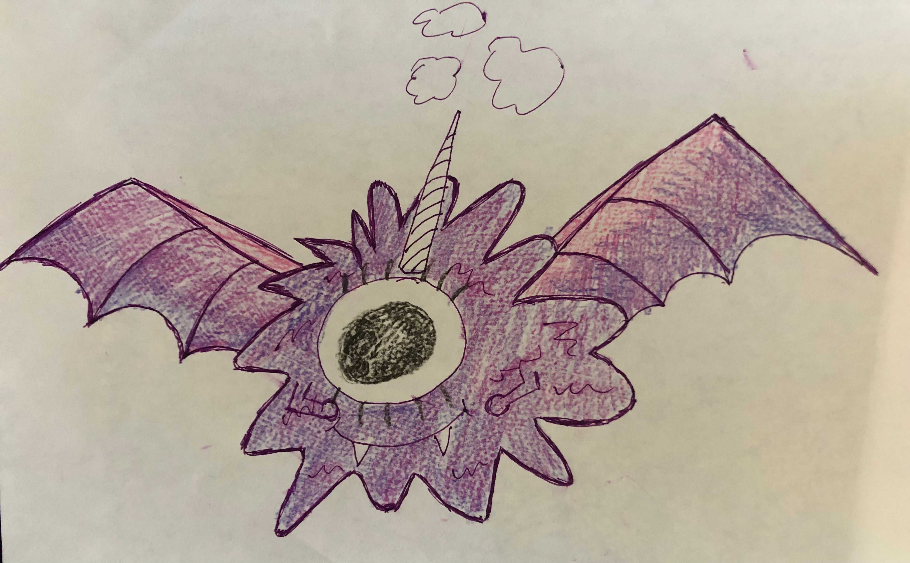

Look out for four distinct features:
- One eye.
- One horn.
- Wings
- A shade of PURPLE.
For refrence, an example sketch from a survivor by the name of Skittles:

One, or many.
They seem to come in different unique forms that look nothing alike. However, because we never saw two PPEs in one place, it is difficult to know if this is one singular creature or a species of creatures terrorizing us one at a time.
You may follow one of these two options that have been used effectively in the past:
Option 1: Invest in a supply of water balloons filled with red food coloring and confetti.
This will mimick the insides of the PPE, which when thrown at said creatures will lead to them thinking themselves about to die. This will give you enough time to run away and hopefully be seen as a threat to not be tracked anymore.
Option 2: Keep a Nerf gun nearby loaded with scented candy darts.
Shooting these scented candy darts at the PPEs will overstimulate their sense of smell causing them to be overly excited. This should provide enough distraction for you to get away.
Yes and no. There have been attempts, but you must weaken them first. Most notable and effective methods are as follows:
Method 1: Set up a doll house with Barbie dolls (or any minature human looking dolls). The PPE will presume the house to be filled with small bize sized people, causing them to begin thinking about new recipes and seasonings to use for their newly discovered snacks. This will keep them entertained for hours.
Method 2: Create a large bath with bubbles. The PPEs find the bubbles irresistable for an unknown reason. However, this many bubbles will hinder their eye sight after all the frolicking that'll occur in the bath.
After you weaken these creatures, you may attempt to use any regular cage to keep them contained.
Be warned, we have no reports of any PPE remaining in a cage for longer than a fortnight, they always end up poofing and reappearing elsewhere.
Follow the sign below that says 'Forms'.
A list of notable symptoms seen on potential victims will be presented and information will be given based on your response.